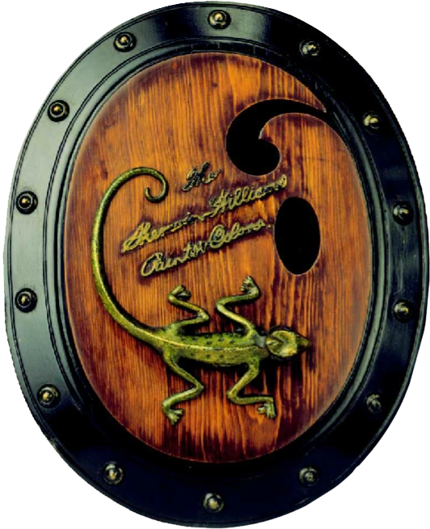

Sherwin-Williams is a global leader in the paint and coatings industry, established in
1866 and based in Cleveland, Ohio. With a network of over 5,000 stores, the company serves
both professionals and everyday consumers. It’s known for its innovation in paint products,
including early ready-mix solutions and advanced antimicrobial coatings. Sherwin-Williams owns
popular brands such as Valspar and Minwax, and operates through three key divisions: Paint Stores,
Consumer Brands, and Performance Coatings. It is currently the largest coatings company in the world
by revenue.
THE CHALLENGES
The challenges that came through with this project is the overall image of the logo. Most would
say the design comes off rather grotesque and disturbing looking. To briefly explain their current
logo, it includes the Earth that is being washed over a bucket of red paint; in which in a more
explicit sense looks a lot like blood covering the globe.

Caption goes here
THE RESEARCH PROCESS
Upon researching the company's brand and history, I delved into some pretty interesting aspects that
used to be apart of the company's identity such as a chameleon in a medallion being their first symbol. The
very first Sherwin Williams logo dated back in 1885 which was designed by one of the founders, Henry Sherwins,
opted for a chameleon that looks to be on a painter's pallette.
In 1893, George W. Ford recreated the logo that will soon be the main concept through the years till now
which is what we know as the "Cover the Earth" approach.